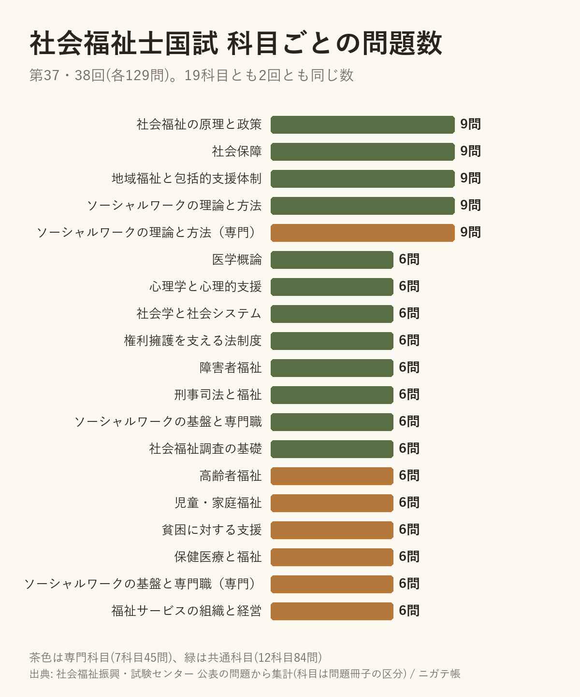

社会福祉士の国試、19科目の問題数は6問か9問。第37・38回とも同じだった
2026-10-07 ・ @apkderete
社会福祉士の試験は、第37回から科目が新しくなりました。新しくなってからの2回(第37回・第38回)の問題を、科目ごとに数えてみました。
介護福祉士や管理栄養士でも同じように数えてきましたが、社会福祉士がいちばん形が揃っていました。
19科目すべて、6問か9問

9問の科目は5つです。社会福祉の原理と政策、社会保障、地域福祉と包括的支援体制、ソーシャルワークの理論と方法、ソーシャルワークの理論と方法(専門)。残りの14科目はすべて6問でした。この数が、第37回と第38回で1問も変わっていません。
共通科目84問と、専門科目45問
全体の129問のうち、共通科目(精神保健福祉士と共通の12科目)が84問、社会福祉士だけが受ける専門科目(7科目)が45問です。図の茶色が専門科目です。
どの科目も6問以上あるので、1つの科目を丸ごと捨てると、それだけで6問か9問を落とすことになります。社会福祉士の合格基準には、すべての科目群で得点があることという条件もあります。
数え方について
科目は問題冊子の区分に合わせています。問題は社会福祉振興・試験センターが公表したものです。数字はアプリに入れている問題データから数えたもので、私の入力に誤りがある可能性はあります。気づいたことがあれば X(@apkderete)で教えてください。
第38回の問題は、1問ずつ正答と解説つきで置いています。
社会福祉士 第38回の過去問と解説 / 第39回の試験日と合格基準 / 介護福祉士の科目ごとの問題数
解説は私が書いたもので、試験センターとは関係ありません。過去問アプリ「ニガテ帳」(iPhone)では、社会福祉士の258問を科目ごとにも解けます。